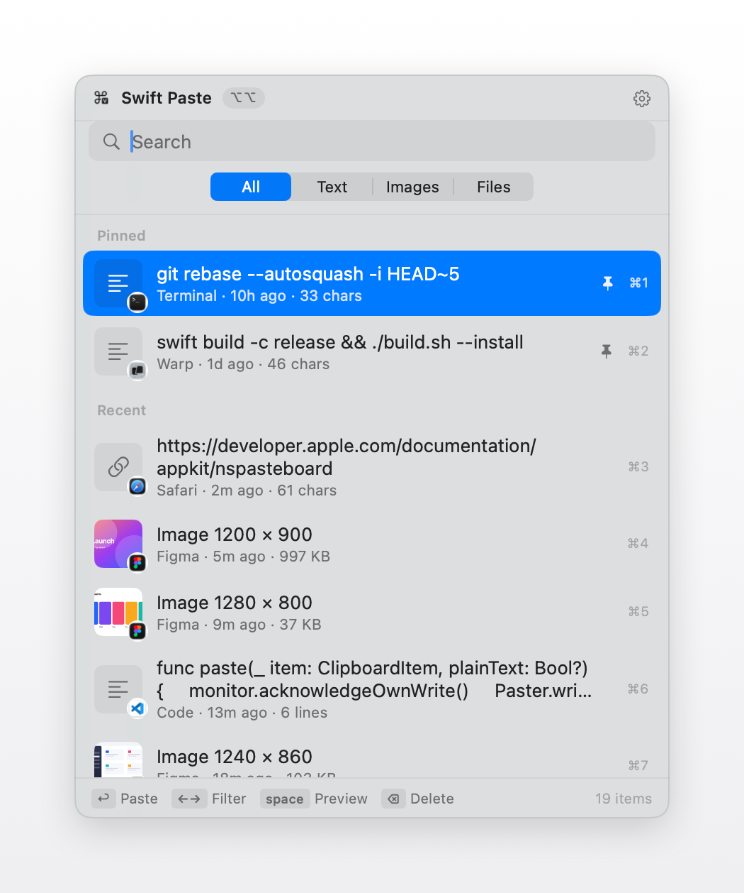

A clipboard history for the Mac menu bar. Tap Option twice, search, and paste — text, images and files, all stored on your own machine.
Free and open source · macOS 13 or later
Every part of it is reachable without reaching for the mouse.
There is no search field to click into first. The history opens with the cursor already in it, so whatever you type filters straight away — across text, file names and the app each entry came from.
Press space and the entry opens beside the list, the way Quick Look works in Finder. Images render full size, long text stays readable, and you can select just the part you want and copy that instead.
Arrow left and right to move between everything, text, images and files. Useful when you know you copied a screenshot twenty minutes ago and do not want to scroll past everything since.
⌥⌘V pastes the entry before the current one straight into the app you are in, with no window appearing at all. That entry then moves to the top, so pressing it again swaps back. Copying two values and alternating between them stops being a chore.
⌘P pins an entry to the top of the list. Pinned entries are exempt from every retention rule — they never expire, they are never trimmed away by newer copies, and they survive Clear History.

Eleven shortcuts. That is all there is to learn.
Your clipboard is one of the most sensitive things on a computer. This one is treated that way.
Nothing to sign up for. History lives in a folder in your Library and stays there.
The app makes none. There is no telemetry, no crash reporting and no update pinging.
Content that password managers mark confidential is ignored and never written down.
Free, open source, and built by GitHub Actions from the source in the repository.
Download for MacRequires macOS 13 or later. Apple silicon and Intel.